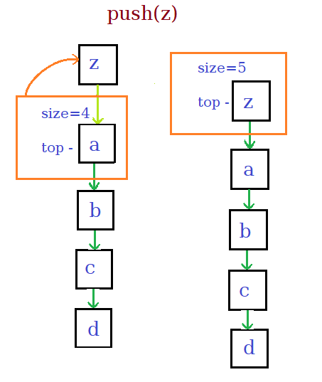

- It is a linear data structure made from chain of node objects.
- Each node has two attributes data and pointer to the next node in the list.
- The stack object has attributes top and size of stack.
Important Functions
-
Push
Inserts the data at the top of stack.
- Make node with Data and the next pointer pointing to the current top of the stack.
- Set the top of the stack as the new node created.
- Increment the size.

-
pop()
Removes the object at the top, optionally returns the data stored in it.
- Store the data at top in a temporary variable.
- Set the top to be the next of the current top.
- Return the data.
-
top()
Returns the data stored in the top of stack.
-
size()
Returns the number of objects in the stack.
Code